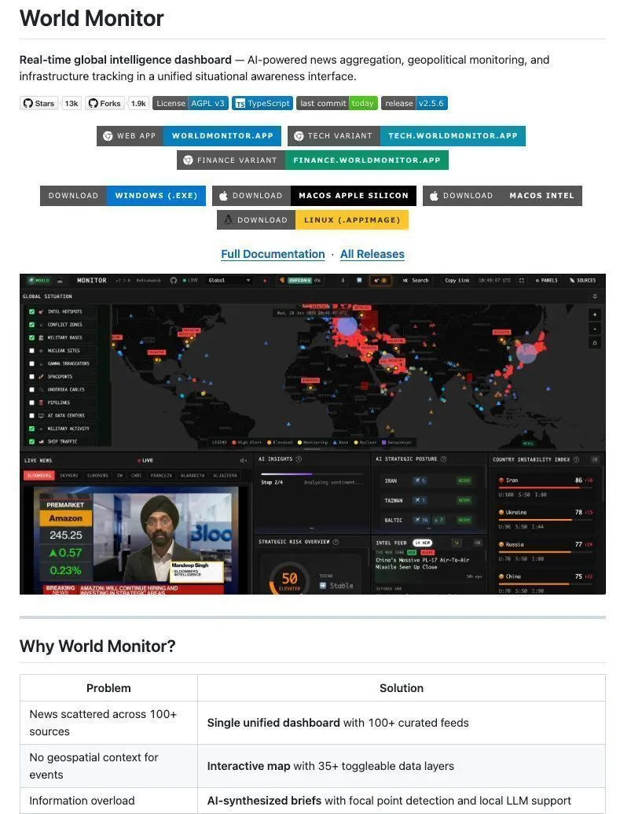

World Monitor opens global intelligence to everyone
Originally posted on LinkedIn, March 12, 2026.
Governments pay millions for OSINT tools. Eli Haviv built one and released it as open source. World Monitor is the ultimate free dashboard for global intelligence, essentially a Bloomberg Terminal for geopolitics.
It tracks the following in real time on a 3D globe:
- Live military flights and "dark" vessels
- Active conflict zones and 220+ military bases
- Undersea cables, nuclear sites, and prediction markets
The most striking part is the AI. It reads over 100 news sources, classifies threats, and triggers "convergence alerts" when signals such as protests and military flights appear in the exact same location.
There are no paid subscriptions. You can even run the AI locally through Ollama, so no data leaves your computer. The open-source repository is available here. Eli deserves huge credit for building and releasing it.
